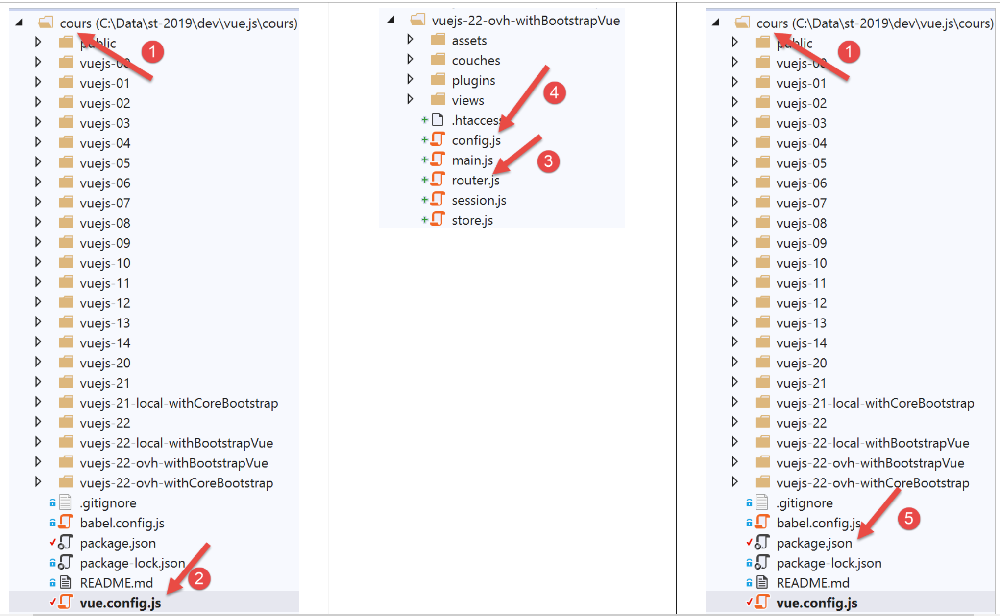

20. Deploying the client/server application on a hosting service
Here we outline the deployment of the client/server application we developed on an OVH server [https://www.ovh.com/fr/]. Deployment on other hosting providers should not be very different. We simply want to show that our application lends itself well to this deployment.
20.1. Server Deployment
The OVH hosting service in question is a basic hosting plan:
- a PHP 7.3 environment;
- a MySQL DBMS;
- no [Redis] server;
The third point requires us to modify version 14 of our tax calculation server.

We need to modify:
- the configuration files [1];
- the [AdminDataController] and [CalculerImpotController] controllers to account for the fact that there is no [Redis] server;
The [config.json] file changes as follows:
{
"databaseFilename": "Config/database.json",
"corsAllowed": false,
"redisAvailable":false,
"rootDirectory": "/.../www/apps/import/php7-server",
"relativeDependencies": [
"/Entities/BaseEntity.php",
...
"/Controllers/AdminDataController.php"
],
"absoluteDependencies": [
"/.../vendor/autoload.php",
"/.../vendor/predis/predis/autoload.php"
],
"users": [
{
"login": "admin",
"passwd": "admin"
}
],
...
}
Comments
- line 4: we introduce a boolean [redisAvailable] to indicate whether or not we have access to a [Redis] server;
- lines 5, 13, 14: the absolute paths will change;
The [database.json] file changes as follows:
{
"dsn": "mysql:host=...;dbname=...",
"id": "...",
"pwd": "...",
"tableTranches": "dbimpots_tbtranches",
"colLimites": "limites",
"colCoeffR": "coeffr",
"colCoeffN": "coeffn",
"tableConstants": "dbimpots_tbconstants",
"colPlafondQfDemiPart": "plafondQfDemiPart",
...
}
Comments
- lines 2–4: the database name and its owner’s credentials will change;
The [AdminDataController] evolves as follows:
<?php
namespace Application;
// Symfony dependencies
use \Symfony\Component\HttpFoundation\Response;
use \Symfony\Component\HttpFoundation\Request;
use \Symfony\Component\HttpFoundation\Session\Session;
// alias for the [dao] layer
use \Application\ServerDaoWithSession as ServerDaoWithRedis;
class AdminDataController implements InterfaceController {
// $config is the application configuration
// processing a Request
// uses the Session and can modify it
// $infos is additional information specific to each controller
// returns an array [$statusCode, $status, $content, $headers]
public function execute(
array $config,
Request $request,
Session $session,
array $infos = NULL): array {
// There must be a single GET parameter
$method = strtolower($request->getMethod());
...
// we can work
// Redis
if ($config["redisAvailable"]) {
\Predis\Autoloader::register();
...
} else {
try {
// retrieve tax data from the database
$dao = new ServerDaoWithRedis($config["databaseFilename"], NULL);
// taxAdminData
$taxAdminData = $dao->getTaxAdminData();
} catch (\Throwable $ex) {
// Something went wrong
// Return the result with an error to the main controller
$status = 1051;
return [Response::HTTP_INTERNAL_SERVER_ERROR, $status,
["response" => utf8_encode($ex->getMessage())], []];
}
}
// return result to the main controller
$status = 1000;
return [Response::HTTP_OK, $status, ["response" => $taxAdminData], []];
}
}
Comments
- line 31: we now check whether or not we have a [Redis] server;
- lines 32–34: if so, the preceding code is executed in its entirety;
- lines 35–46: otherwise, the tax authority data is retrieved from the database;
The [CalculerImpotController] controller, which also requires data from the tax authority, is updated in the same way.
That’s it. Deployment to the OVH server involved using FTP. We uploaded the following to OVH:
- the [vuejs-14-without-redis] version;
- the [vendor] folder, which contains all dependencies for the [vuejs-14-without-redis] server;
Once the FTP transfer was complete, we generated the necessary tables for the server using the following SQL script:
-- phpMyAdmin SQL Dump
-- version 4.8.5
-- https://www.phpmyadmin.net/
--
-- Host: localhost:3306
-- Generation Time: Oct 12, 2019 at 7:45 AM
-- Server version: 5.7.24
-- PHP Version: 7.2.11
SET SQL_MODE = "NO_AUTO_VALUE_ON_ZERO";
SET AUTOCOMMIT = 0;
START TRANSACTION;
SET time_zone = "+00:00";
/*!40101 SET @OLD_CHARACTER_SET_CLIENT=@@CHARACTER_SET_CLIENT */;
/*!40101 SET @OLD_CHARACTER_SET_RESULTS=@@CHARACTER_SET_RESULTS */;
/*!40101 SET @OLD_COLLATION_CONNECTION=@@COLLATION_CONNECTION */;
/*!40101 SET NAMES utf8mb4 */;
--
-- Table structure for table `dbimpots_tbconstantes`
--
CREATE TABLE `dbimpots_tbconstantes` (
`id` int(11) NOT NULL,
`QfDemiPartLimit` decimal(10,2) NOT NULL,
`singleIncomeLimitForReduction` decimal(10,2) NOT NULL,
`coupleIncomeLimitForReduction` decimal(10,2) NOT NULL,
`half-share-reduction-value` decimal(10,2) NOT NULL,
`singleDiscountLimit` decimal(10,2) NOT NULL,
`coupleDiscountLimit` decimal(10,2) NOT NULL,
`singleTaxCeilingForDiscount` decimal(10,2) NOT NULL,
`coupleTaxCeilingForDiscount` decimal(10,2) NOT NULL,
`MaxTenPercentDeduction` decimal(10,2) NOT NULL,
`minTenPercentDeduction` decimal(10,2) NOT NULL
) ENGINE=InnoDB DEFAULT CHARSET=utf8;
--
-- Dumping data for table `dbimpots_tbconstantes`
--
INSERT INTO `dbimpots_tbconstantes` (`id`, `half-share-threshold`, `single-income-threshold-for-reduction`, `couple-income-threshold-for-reduction`, `half-share-reduction-value`, `single-discount-threshold`, `couple-discount-threshold`, `singleTaxCeilingForDiscount`, `coupleTaxCeilingForDiscount`, `maxTenPercentDeduction`, `minTenPercentDeduction`) VALUES
(8, '1551.00', '21037.00', '42074.00', '3797.00', '1196.00', '1970.00', '1595.00', '2627.00', '12502.00', '437.00');
-- --------------------------------------------------------
--
-- Table structure for table `dbimpots_tbtranches`
--
CREATE TABLE `dbimpots_tbtranches` (
`id` int(11) NOT NULL,
`limits` decimal(10,2) NOT NULL,
`coeffR` decimal(10,2) NOT NULL,
`coeffN` decimal(10,2) NOT NULL
) ENGINE=InnoDB DEFAULT CHARSET=utf8;
--
-- Dumping data for table `dbimpots_tbtranches`
--
INSERT INTO `dbimpots_tbtranches` (`id`, `limits`, `coeffR`, `coeffN`) VALUES
(36, '9964.00', '0.00', '0.00'),
(37, '27519.00', '0.14', '1394.96'),
(38, '73779.00', '0.30', '5798.00'),
(39, '156244.00', '0.41', '13913.69'),
(40, '0.00', '0.45', '20163.45');
--
-- Indexes for dumped tables
--
--
-- Indexes for table `dbimpots_tbconstantes`
--
ALTER TABLE `dbimpots_tbconstantes`
ADD PRIMARY KEY (`id`);
--
-- Indexes for table `dbimpots_tbtranches`
--
ALTER TABLE `dbimpots_tbtranches`
ADD PRIMARY KEY (`id`);
--
-- AUTO_INCREMENT for dumped tables
--
--
-- AUTO_INCREMENT for table `dbimpots_tbconstantes`
--
ALTER TABLE `dbimpots_tbconstantes`
MODIFY `id` int(11) NOT NULL AUTO_INCREMENT, AUTO_INCREMENT=9;
--
-- AUTO_INCREMENT for table `dbimpots_tbtranches`
--
ALTER TABLE `dbimpots_tbtranches`
MODIFY `id` int(11) NOT NULL AUTO_INCREMENT, AUTO_INCREMENT=41;
COMMIT;
/*!40101 SET CHARACTER_SET_CLIENT=@OLD_CHARACTER_SET_CLIENT */;
/*!40101 SET CHARACTER_SET_RESULTS=@OLD_CHARACTER_SET_RESULTS */;
/*!40101 SET COLLATION_CONNECTION=@OLD_COLLATION_CONNECTION */;
Once all of this was done, we adapted the [config.json, database.json] files to their new environment.
20.2. Deployment of the [Vue.js] client
It was decided to deploy the [Vue.js] client to the URL [http://machine/apps/impot/client-vuejs/]. This resulted in the following changes:
At the root of the [VSCode] [workspace], we created the following [vue.config.js] file:

The [vue.config.js] file is as follows:
// vue.config.js
module.exports = {
// the service URL of the [vuejs] client on the tax calculation server
publicPath: '/apps/tax/client-vuejs/'
}
The [router.js] [3] file has also been modified:
// imports
import Vue from 'vue'
import VueRouter from 'vue-router'
...
// routing plugin
Vue.use(VueRouter)
// application routes
const routes = [
...
]
// the router
const router = new VueRouter({
// the routes
routes,
// URL display mode
mode: 'history',
// the application's base URL
base: '/apps/impot/client-vuejs/'
})
// route validation
router.beforeEach((to, from, next) => {
...
})
// export the router
export default router
Comments
- line 21: the URL base has been changed;
The [config.js] file is modified as follows:
// using the [axios] library
const axios = require('axios');
// HTTP request timeout
axios.defaults.timeout = 5000;
// base URL for the tax calculation server
// The [https] scheme causes issues in Firefox because the tax calculation server
// sends a self-signed certificate. Works fine with Chrome and Edge. Not tested with Safari.
// With Firefox, this is possible by requesting the URL below directly and telling Firefox
// that you accept the risk of an unsigned certificate. Then the [vuejs] client will work.
axios.defaults.baseURL = 'http://.../apps/impot/serveur-php7';
// we're going to use cookies
axios.defaults.withCredentials = true;
// export the configuration
export default {
// [axios] object
axios: axios,
// maximum session inactivity timeout: 5 min = 300 s = 300,000 ms
sessionDuration: 300000
}
Comments
- line 10: enter the URL of the tax calculation server;
The production version of the project was generated using the [build] command in the following [package.json] file [5]:
{
"name": "vuejs",
"version": "0.1.0",
"private": true,
"scripts": {
"serve": "vue-cli-service serve vuejs-22/main.js",
"build": "vue-cli-service build vuejs-22-ovh-withBootstrapVue/main.js",
"lint": "vue-cli-service lint"
},
...
}
Once this was done, the [dist] folder containing the generated production version was ‘uploaded’ to the OVH server into the [/.../apps/impot] folder and then renamed [client-vuejs] so that the client code would be in the [/.../apps/impot/client-vuejs/] folder as planned. Then, in this folder, we uploaded the following [.htaccess] file:
<IfModule mod_rewrite.c>
RewriteEngine On
RewriteBase /apps/impot/client-vuejs/
RewriteRule ^index\.html$ - [L]
RewriteCond %{REQUEST_FILENAME} !-f
RewriteCond %{REQUEST_FILENAME} !-d
RewriteRule . /apps/import/client-vuejs/index.html [L]
</IfModule>
This is because the OVH web server used here is an Apache server. For other types of servers, please refer to the documentation |https://cli.vuejs.org/guide/deployment.html|.
The PHP 7 server application can be tested |here|.
The [Vue.js] client can be tested |here|.
20.3. Conclusion
Version [vuejs-21] was not essential. We had seen that version [vuejs-20] handled user-entered URLs correctly. Nevertheless, the new version provides additional convenience for the user. They can navigate by typing URLs. The application then displays the view that best suits the current state (the session) of the application. In addition, version [vuejs-22] brings improvements to the application’s display on mobile devices.